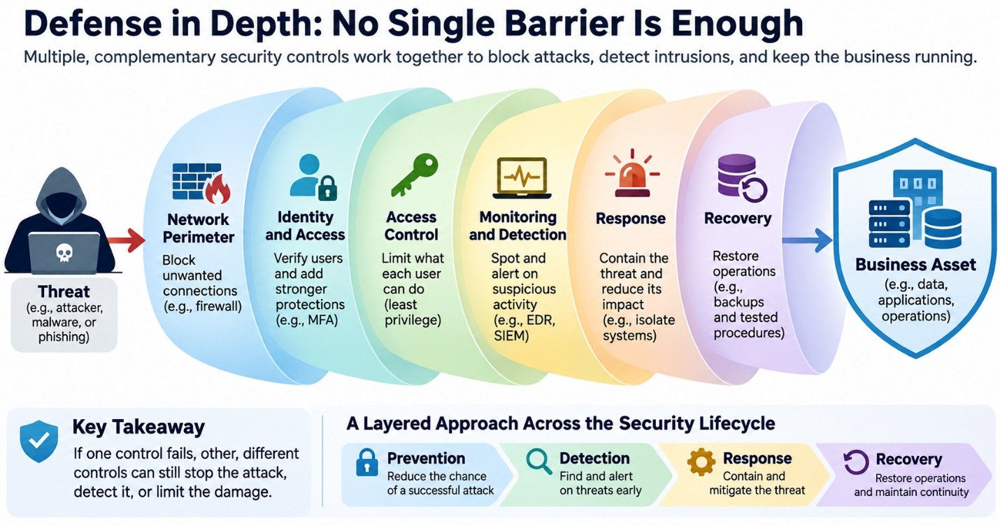

6.2 Cybersecurity: Protecting the Digital Enterprise
Imagine the heart of your business – whether it’s processing insurance claims for hospitals, managing payments at a casino resort, or running a cloud service – suddenly grinding to a halt because “the network is down.” This isn’t a power outage or a software bug; it’s the all-too-real threat of a cyberattack. In early 2024, a massive ransomware attack on Change Healthcare (a UnitedHealth Group subsidiary that handles pharmacy and claims processing) froze the flow of prescriptions and billing across the U.S., with executives later reporting multi-billion-dollar impacts on operations and revenue6. Just months earlier, MGM Resorts’ systems were breached, exposing millions of customers’ personal data4 and forcing the company to isolate affected systems. And in July 2024, a faulty software update from CrowdStrike – ironically a cybersecurity firm – accidentally crashed millions of Windows computers worldwide, grounding flights and disrupting hospitals for days even though no hacker was involved3. These events underscore a simple truth for any organization: cybersecurity is no longer just an IT issue, it’s a business imperative. Any manager or entrepreneur who depends on digital systems must understand the rules of this game.
What is Cybersecurity? At its core, cybersecurity means protecting information, computers, networks, and services from digital attacks. Like locks, alarms, and guards in the physical world, cybersecurity employs tools and processes to ensure the Confidentiality, Integrity, and Availability of data (often called the “CIA triad”). Confidentiality means only authorized people or systems can see sensitive data. Integrity means data isn’t changed by unauthorized parties. Availability means systems and data are accessible when needed. A weak password or unpatched software can be a vulnerability that attackers exploit. A “threat actor” (whether a criminal gang, a nation-state spy, or even an insider with malicious intent) looks for such vulnerabilities to disrupt services, steal information, or hold systems for ransom. Common attack methods include phishing emails that trick employees into revealing credentials, malware (like viruses or ransomware) that infects systems, and exploiting vulnerabilities in software or network configurations. For example, in the MOVEit file-transfer hack of 2023, attackers exploited an unpatched SQL-injection flaw in widely used file-transfer software, stealing data from thousands of organizations5.
Cybersecurity also involves defenses and controls. Firewalls act like filters at a company’s network boundary; antivirus software inspects files for known malware; multi-factor authentication (MFA) forces a second check (like a text code) when logging in; and encryption scrambles data so that stolen files are useless without the key. Organizations use intrusion detection systems and security information platforms to monitor for unusual activity, and they maintain backup systems and incident-response plans in case of an attack. Crucially, cybersecurity is not just technology – it is a process. It requires continual risk assessment (e.g. third-party vendor risk, employee training, patch management) and a culture of awareness. No security is perfect, so plans for incident response (who to call, how to contain a breach, how to communicate with customers) are part of modern cybersecurity.
Why It Matters for Business
Cyber threats have tangible business costs and consequences. The FBI’s Internet Crime Complaint Center (IC3) reports that in 2024 organizations and individuals lost a record $16.6 billion to cybercrime – up 33% from the year before – across about 860,000 complaints2. Reported losses span many forms of cybercrime, including fraud and business email compromise. These are money directly out of the business’s pocket, whether from ransom payments, legal fines, remediation costs, or lost revenue. IBM’s annual “Cost of a Data Breach” report (2025) found the global average cost of a data breach was around $4.44 million – though that average hides huge variation depending on industry and scale1. One constant, however, is that breaches are costly and complex: they usually involve multiple factors (for example, a phishing email led to stolen credentials which led to a data leak). Even “benign” incidents can be expensive: CrowdStrike’s 2024 outage (caused by a faulty update) likely incurred millions in recovery costs and lost productivity despite no attack.
The business impact goes beyond dollars. A security breach can halt critical operations. When Colonial Pipeline was hit by ransomware in 2021, it shut down fuel deliveries on the U.S. East Coast for a week, causing panic buying of gasoline. In February 2024, Change Healthcare’s cyberattack forced many pharmacies and doctors to submit claims manually or delay billing – threatening cash flow for providers nationwide6. Even when systems come back online, there are often lingering effects: customer trust erodes, reputations are damaged, and regulatory scrutiny increases (e.g. under privacy laws like HIPAA or GDPR, or industry rules). Public company filings reveal that even when companies “fix” a breach, they often quietly pay millions for new security measures, legal settlements, or identity protection for customers10.
For managers, cybersecurity risk is also a strategic issue. It affects the cost structure and competitiveness of the firm. Companies that invest in strong security may incur higher operational costs (for security teams, audits, insurance), but they reduce the chance of a catastrophic loss. Companies that neglect security to save money can pay a much higher price later. For instance, the U.S. health-care field saw an “unprecedented” national crisis when a single network provider (Change Healthcare) was disrupted, illustrating the systemic risk of critical cyber infrastructure6 – a single point of failure for many businesses. Conversely, companies can turn security into a market advantage: emphasizing robust cybersecurity can be a selling point to customers and partners who value reliability.
Cybersecurity also cuts across the organization. It is not just an IT problem left to technical staff. Boards of directors and executives must factor cyber risk into business decisions: mergers (due diligence on the target’s security), product design (building security features into services), and even marketing (explaining to customers how their data is protected). Many firms now require cyber risk assessments for all major projects. In short, cybersecurity can be a differentiator: one firm’s strong security posture can inspire confidence in customers, whereas a headline-making breach can hand advantage to competitors.
Common Cyberattacks: How They Work
Phishing and credential theft: An attacker sends a convincing message that invites an employee to open a malicious link, disclose a password, or approve a fraudulent login. Spear phishing targets a particular person or team using information about their work. Business email compromise (BEC) often impersonates a trusted executive or supplier to redirect payments; no malware is required if a convincing instruction is enough.
Malware and ransomware: Malware is malicious software designed to steal, spy, disrupt, or take control. Ransomware commonly encrypts files or disables systems and demands payment; some groups also steal data and threaten to publish it. Backups help restore operations, but they do not undo theft of confidential information.
Denial of service (DoS) and distributed denial of service (DDoS): These attacks target availability rather than necessarily stealing data. A DoS attack overwhelms a service with requests or exhausts a limited resource. In a DDoS attack, traffic comes from many devices or sources, making it harder to filter. For an online retailer, the immediate loss may be abandoned purchases, missed orders, and customer frustration. Rate limiting, traffic filtering, content delivery networks, and specialized mitigation services can absorb or reject much of the unwanted traffic, but defenses are not foolproof.
Exploitation of software vulnerabilities: Attackers may take advantage of programming errors, weak configurations, or exposed services to gain access. A zero-day vulnerability is a weakness for which defenders have had no advance opportunity to deploy a vendor fix when exploitation begins; a zero-day exploit is the method used to take advantage of it. The MOVEit attacks illustrate why even diligent organizations can be exposed before a patch exists. Organizations reduce the consequences through rapid detection, restricted access, network segmentation, and temporary mitigations while fixes are developed.5
Supply-chain compromise: Instead of attacking a company directly, adversaries compromise software, a service provider, or an update mechanism the company trusts. This can turn a widely used dependency into a route to many customers, as the SolarWinds case illustrates. The managerial challenge is that outsourcing a service does not outsource responsibility for the resulting business disruption.
Social Engineering: Attacking the Human Workflow
Social engineering is the manipulation of people into granting access, disclosing information, or taking an action that benefits an attacker. It works by exploiting familiar organizational habits: urgency, helpfulness, authority, routine approvals, and the assumption that a familiar voice or email address must be genuine. Attackers often research a target before making contact, so a message may contain authentic names, job titles, and project details.8
Phishing uses deceptive email; smishing uses text messages; vishing uses phone calls; and pretexting uses an invented but plausible story, such as a caller claiming to be an IT technician restoring access. In a help-desk impersonation attack, the criminal may persuade support staff to reset a password or enroll a new authentication device. A business email compromise may instead instruct accounts payable to change a supplier bank account. AI-generated text, voice cloning, and convincing fake images can make impersonation more persuasive, but the underlying weakness is often a broken verification process rather than an employee’s lack of technical knowledge.
Consider an accounts-payable analyst receiving a message that appears to come from a long-standing supplier: “Our banking details changed; please use the attached instructions for today’s payment.” The attachment may look entirely normal. The correct defense is not to guess whether the message feels suspicious; it is to verify bank-account changes using a previously established contact channel, independently of the request. For high-value payments, two-person approval and clear exception procedures can prevent a rushed decision from becoming an irreversible transfer.
Awareness training matters, but blaming the person who was deceived misses the system problem. Strong organizations design workflows that make verification easy, limit the authority of any one compromised account, use phishing-resistant MFA where practical, and allow employees to report suspicious requests without embarrassment. The MGM case later in this chapter illustrates why the help desk can be as important a security boundary as a firewall.
Defense in Depth: No Single Barrier Is Enough
Defense in depth means placing multiple, complementary security controls between a threat and an important business asset. Think of a museum: a locked front door is useful, but it is not the entire security plan. Cameras, restricted galleries, alarm sensors, inventory records, and a response team protect the collection even if someone gets past the entrance. Digital security follows the same logic. A firewall may block unwanted connections; identity controls verify users; least-privilege permissions limit what an account can do; monitoring detects suspicious activity; and backups help restore operations after a failure.7
The controls must be different enough that one failure does not defeat them all. A stolen password should not automatically grant access if phishing-resistant MFA is required. A compromised account should not expose every system if access is segmented and privileges are limited. If an attacker reaches a server, endpoint monitoring may still detect malicious behavior. If systems are encrypted by ransomware, tested, isolated backups and rehearsed recovery procedures can keep a technical incident from becoming a prolonged business shutdown.
Defense in depth is not simply buying more security products. Layers that depend on the same administrator account, vendor, or network connection may fail together. Managers should ask what happens when each control fails, how quickly the next layer detects trouble, and whether the organization can continue critical work. Effective layering combines prevention, detection, response, and recovery with well-defined responsibilities. The objective is resilience: reducing the chance of a successful attack and limiting its damage when prevention fails.

Show long description
The figure illustrates defense in depth, a cybersecurity strategy that uses multiple, complementary security controls to protect an organization's digital assets. Rather than relying on a single protective barrier, defense in depth combines preventive, detective, responsive, and recovery measures so that the failure of one control does not necessarily result in a successful attack or prolonged business disruption.
The diagram is arranged horizontally, with a potential cyber threat on the far left, six overlapping security layers in the center, and a protected business asset on the far right. The security layers appear as large, partially overlapping, translucent barriers in different colors. Their overlapping arrangement emphasizes that the controls work together rather than operating as completely independent systems.
On the left, a hooded figure using a laptop represents a potential threat, such as a malicious attacker, malware, or a phishing attempt. A red arrow points from the threat toward the security layers. On the right, a large blue shield containing icons of servers, a database, and a building represents the business assets being protected, including organizational data, applications, and operations.
The six security layers, moving from left to right, are:
- Network Perimeter: The first layer, shown in light blue, contains an icon representing a firewall. Its purpose is to block unwanted network connections and restrict potentially malicious traffic. Firewalls are an important first line of defense, but they cannot prevent every attack, particularly when an attacker uses an authorized connection or compromised credentials.
- Identity and Access: The second layer, shown in turquoise, contains a person icon and a padlock. This layer verifies the identity of users and applies additional authentication protections, such as multi-factor authentication (MFA). Its purpose is to reduce the likelihood that stolen passwords or unauthorized users can gain access to organizational systems.
- Access Control: The third layer, shown in light green, contains a key icon. This layer limits what authenticated users and systems are permitted to do. It illustrates the principle of least privilege, under which individuals and applications receive only the permissions necessary to perform their assigned tasks. If an account is compromised, restricted permissions can limit the attacker's ability to access other systems or sensitive information.
- Monitoring and Detection: The fourth layer, shown in pale yellow, contains a computer monitor displaying a heartbeat-like signal. This layer identifies potentially suspicious behavior that may indicate an intrusion or other security problem. Examples include endpoint detection and response (EDR) tools and security information and event management (SIEM) systems. These technologies collect and analyze activity to help security teams recognize threats that have bypassed preventive controls.
- Response: The fifth layer, shown in light orange, contains a red alarm icon. This layer represents actions taken after suspicious or malicious activity is identified. Response measures may include isolating compromised computers, disabling affected accounts, restricting network connections, and containing an attack before it spreads. The objective is to reduce the damage caused by a security incident.
- Recovery: The sixth layer, shown in light purple, contains a database icon and a circular recovery arrow. This layer represents the organization's ability to restore systems, data, and business operations following an incident. Examples include restoring information from backups and following tested recovery procedures. Recovery controls are particularly important when ransomware, destructive malware, or other incidents interrupt essential business services.
A blue arrow extends from the final security layer toward the protected business asset. The sequence illustrates how the combined controls help protect organizational resources. Importantly, the figure does not imply that every attack must pass through these six controls in a fixed order. Some controls prevent unauthorized activity, while others detect, contain, or recover from incidents that have already occurred.
Beneath the main diagram are two explanatory panels.
The panel on the lower left is labeled “Key Takeaway” and contains a blue shield with a check mark. It states that if one security control fails, other, different controls may still stop the attack, detect it, or limit the resulting damage. This reinforces the central principle that security controls should be complementary rather than redundant in ways that leave them vulnerable to the same failure.
The wider panel on the lower right is titled “A Layered Approach Across the Security Lifecycle.” It contains four connected, colored segments representing the major activities involved in protecting an organization:
- Prevention: Reduce the chance of a successful attack through controls such as firewalls, authentication, and access restrictions.
- Detection: Identify suspicious activity and alert security personnel as early as possible.
- Response: Contain and mitigate threats to prevent further damage.
- Recovery: Restore systems and operations while maintaining business continuity.
These four activities emphasize that cybersecurity extends beyond preventing attacks. Organizations must also be prepared to recognize incidents, limit their consequences, and resume operations.
The figure's central message is that effective cybersecurity depends on multiple, complementary layers of protection rather than any single security product or control. A firewall may fail to stop an attacker using stolen credentials, but MFA could prevent unauthorized access. If an attacker gains access despite authentication controls, least-privilege permissions may limit the damage. Monitoring may detect suspicious behavior, response procedures may contain the intrusion, and recovery capabilities may restore affected operations.
The diagram also illustrates why cybersecurity is an organizational responsibility rather than purely a technical function. Preventive controls require appropriate policies and system configuration; monitoring requires people and processes capable of recognizing and investigating alerts; response requires coordinated decision-making; and recovery depends on business continuity planning and tested procedures.
Key Takeaway: Defense in depth improves organizational resilience by combining different security controls that prevent attacks, detect intrusions, contain damage, and restore operations. Because no individual control is completely reliable, organizations should design their defenses so that the failure of one layer does not automatically compromise their most important business assets.
Cybersecurity in Practice
People, Process, Technology: Effective cybersecurity combines all three. Technology tools (firewalls, encryption, antivirus, authentication) address technical vulnerabilities. Processes (security policies, patch management, incident response drills) ensure these tools work and adapt over time. And people must be trained: since many breaches begin with a malicious email or social engineering, employee awareness can prevent many incidents.
A typical organization’s security starts with network controls. Firewalls and secure routers limit incoming traffic. Companies often use zero trust principles: by default, any connection or user is considered untrustworthy until proven otherwise, meaning every access request is authenticated and authorized. Access controls restrict who can see or modify sensitive systems (the principle of least privilege). For example, system administrators might have the ability to reboot servers but not to view customer data, while customer service reps see data but can’t change system code. MFA is nowadays a standard: without it, compromised passwords (from phishing or breaches of other sites) can give attackers a way in.
On the data side, encryption is essential: data should be encrypted at rest (on disk or in the cloud) and in transit (sent between services). That way, if attackers steal files or intercept traffic, the raw data is unreadable without the decryption keys. For example, after major breaches, many companies report that credit card numbers or medical records remained safe because they were stored encrypted. Backups are another key defense: regular, offline backups mean that if ransomware strikes (encrypting company files and demanding payment), you can restore systems without paying. Of course, backups must be secured too (else the ransomware could encrypt backups as well).
Encryption: Protecting Information Even When Systems Are Exposed
Encryption converts readable information, called plaintext, into unreadable ciphertext using a cryptographic algorithm and a key. A person or system with the appropriate key can decrypt it. This makes encryption one of the most important controls for confidentiality: intercepted network traffic or a stolen storage device may reveal little useful information when strong encryption is properly implemented and keys remain protected.11
Encryption in transit protects information as it moves between a browser and a website or between business systems; HTTPS typically uses TLS for this purpose. Encryption at rest protects stored information on laptops, databases, disks, and cloud storage. Organizations also rely on key management: deciding who can use keys, where they are stored, how they are rotated, and how access is revoked. A perfectly strong algorithm is of little help if the attacker steals the decryption key or logs in as an authorized user.
Encryption is not a substitute for access controls, backups, or monitoring. An attacker who compromises an authorized account may be able to read data after the system decrypts it. Encryption also does not guarantee availability: ransomware can still lock up systems or disrupt operations. For managers, the questions are which sensitive data require protection, whether encryption is enabled across relevant workflows, and who controls the keys.
Detection and response: Since no defense is perfect, companies invest in detecting when something goes wrong and responding quickly. Security Information and Event Management (SIEM) tools collect logs from servers and networks, looking for patterns that might indicate a breach (unusual login times, large data transfers, malware signatures). Major breaches are often spotted by such monitoring or by reports (e.g. a patient calls asking why they got a weird email from the hospital). Once an incident is detected, the organization’s incident response plan kicks in: specialists isolate affected systems (as Change Healthcare did by disconnecting servers), analyze the breach, communicate to authorities and customers, and begin remediation and recovery. This also involves PR and legal communication – breach laws often require notifying customers and regulators within a certain time, and many firms use that moment to reinforce trust by being transparent.
Third-party and supply-chain risk: Modern businesses rely on many vendors and partners. That means your cybersecurity is only as strong as your weakest link. Famous examples include the SolarWinds attack of 2020 (discussed below) and the MOVEit breach of 2023: in both cases, attackers exploited vulnerabilities in third-party software that thousands of organizations used, enabling a massive ripple of breaches. The MOVEit incident alone led to data of over 2,000 organizations and 62 million individuals being compromised5, affecting companies from the BBC to government agencies. This highlights why managers must assess vendor security carefully and plan for scenarios where a supplier gets hacked. Some controls include requiring vendors to meet security standards (e.g. ISO 27001, NIST) and having contractual rights to review their practices, as well as diversifying critical services so not everything depends on one provider.
Cost considerations: Implementing strong security takes investment – hardware, software licenses, training, audits, and possibly higher salaries for skilled cybersecurity staff. Small companies in particular face a trade-off: the cost of security can seem high relative to immediate needs. However, many analysts point out that, in the long run, cloud services and shared security tools have made enterprise-grade security accessible even to small firms. A startup today can use cloud providers’ built-in encryption, identity management, and DDoS protection without building its own data center security. The decision managers face is often how much risk to accept: some downtime or data loss might be tolerable if the cost of preventing it is higher than the expected damage. Yet recent events show that such bets can misfire spectacularly. As one guide put it, cybersecurity is about preparing for low-probability but extremely high-impact events, which traditional ROI analysis can underestimate.
AI and Cybersecurity
Artificial intelligence is reshaping cybersecurity for attackers and defenders. On the defense side, AI tools help sift through mountains of logs and alert on subtle attack patterns faster than a human could. IBM found that many organizations that used AI for threat detection identified and contained breaches more quickly, helping reduce overall breach costs1 (for example, by automatically applying patches or isolating infected machines). However, attackers too are embracing AI. The same report noted that 16% of attacks in 2025 involved attackers using AI, such as AI-generated phishing emails or deepfake audio to impersonate executives1.
AI agents introduce a different risk: systems that can browse websites, call APIs, read files, and execute actions may also follow malicious instructions embedded in untrusted content. This is known as prompt injection. The danger is not that every agent independently becomes a hacker; it is that a system with excessive permissions can be manipulated into taking actions its owner never intended. Claims about autonomous-agent breaches must be checked against original incident disclosures before being treated as established events.
On the other side, companies are also deploying AI for defensive tasks. For example, banks use AI to detect suspicious transactions that might signal fraud; companies use AI to find new network vulnerabilities before hackers do. But this arms race requires caution. The IBM report noted that 97% of breached organizations using AI in operations had no formal oversight for those AI tools1 – meaning a “shadow AI” model running unmonitored could itself introduce new vulnerabilities or misconfigurations. Managers need to think about who has access to AI systems and whether they are secured like any other asset.
Another AI-related issue is privacy and deepfakes. Attackers use AI to create realistic fake videos or voices to trick employees (e.g. deepfake “the CEO” calling to authorize a transfer). Such tactics can bypass traditional training that focuses only on email scams. Countermeasures might include verifying requests through multiple channels or establishing strict protocols for transactions. Additionally, as companies use AI to handle data (e.g. chatbots that answer customer questions), they must ensure these systems don’t leak sensitive data, and that access to the AI models is protected.
Interactive Demonstration: Distributed Denial-of-Service (DDoS) Attack
Playable simulation: scroll down for the controls.
Show long description
This interactive simulation illustrates how a distributed denial-of-service (DDoS) attack can overwhelm a server's processing capacity, preventing legitimate users from accessing an online service. It demonstrates the relationship between incoming traffic, server capacity, request queues, waiting times, and service availability.
The simulation uses a simplified network diagram with four computers on the left, a request queue in the center, and a server on the right. Three blue computers represent sources of malicious traffic participating in a coordinated DDoS attack. A fourth, green computer represents legitimate users attempting to access the service.
Blue lines connect the attacking computers to the request queue, while a green line connects the legitimate computer to the same queue. Small animated dots travel along these lines to represent incoming requests. The blue dots represent malicious requests, and the green dots represent legitimate requests. Both types of traffic compete for the same limited server resources.
The request queue, represented by a rectangular area containing smaller squares, holds requests waiting to be processed. A numerical indicator displays the current queue length and its maximum capacity. Another indicator shows the approximate waiting time before requests can be processed.
To the right of the queue, a green server icon represents the system receiving and processing requests. The server has a fixed processing capacity, expressed in requests per second. An arrow extending from the server represents completed requests, with animated green dots indicating traffic successfully processed by the system. A numerical indicator displays the number of requests served per second.
The demonstration includes an interactive slider labeled Attack traffic, which allows the user to increase or decrease the volume of malicious requests arriving at the server. The legitimate request rate and server capacity are displayed separately, allowing students to compare total incoming traffic against the server's processing limit.
In the initial state shown, legitimate users generate 40 requests per second, while attackers generate 35 requests per second. Together, these produce 75 incoming requests per second. Because the server can process 120 requests per second, all incoming requests can be handled without creating a backlog. The queue remains empty, and the approximate waiting time is zero.
As the user increases attack traffic, the total number of incoming requests rises. When incoming traffic exceeds the server's processing capacity, requests begin accumulating in the queue. The queue indicator increases, and the estimated waiting time grows. If excessive traffic continues, the queue can reach its maximum capacity, causing additional requests to be dropped or rejected.
The animation illustrates how a DDoS attack affects legitimate users even when the attackers do not gain unauthorized access to the server. Malicious requests consume processing capacity that would otherwise be available to customers, employees, or other authorized users.
A status message beneath the network diagram explains the current relationship between incoming traffic and server capacity. When traffic remains within capacity, the message indicates that no backlog is accumulating. When traffic exceeds capacity, it describes the resulting congestion and service degradation.
The simulation also includes a pause control that allows users to stop the animation and examine the current state of the network.
The central concept illustrated is availability, one of the three foundational principles of cybersecurity, alongside confidentiality and integrity. A DDoS attack primarily targets availability by exhausting a system's capacity to respond to legitimate requests. It does not necessarily involve stealing information, modifying data, or compromising user accounts.
From a business perspective, the consequences can be significant. An online retailer experiencing a DDoS attack may lose sales because customers cannot complete purchases. A bank may be unable to provide online account access, while a digital platform may experience service interruptions that damage customer confidence. Even a relatively short disruption can affect revenue, operations, and reputation.
The simulation deliberately simplifies real-world network behavior. Actual DDoS attacks may involve thousands or millions of compromised devices, multiple types of network traffic, and attacks against different components of an organization's infrastructure. Real systems may also use traffic filtering, rate limiting, content delivery networks, and specialized DDoS mitigation services to absorb or reject malicious traffic before it reaches the targeted application.
Key Takeaway: A distributed denial-of-service attack attempts to disrupt a digital service by overwhelming its available capacity with traffic from multiple sources. As malicious traffic increases, legitimate requests may experience longer waiting times, rejection, or complete service unavailability. The demonstration illustrates why managing traffic, maintaining sufficient capacity, and implementing layered defenses are important for business continuity.
Key Takeaways
- Cybersecurity is a strategic business issue, not just a tech problem. Recent breaches (from MGM to healthcare to AI labs) show that attacks can halt operations, cost millions, and erode trust. Managers must treat cyber risk as a factor in every decision, from budgeting to business continuity planning.
- Protect, detect, respond. The goal is to prevent unauthorized access and then quickly catch and contain any breach that occurs. This means layered defenses (authentication, encryption, firewalls), ongoing monitoring (logs, anomaly detection), and practiced incident response (backup plans, communication). No single tool is sufficient.
- People and processes matter as much as technology. Social engineering often opens the door for hackers. Training employees in cybersecurity hygiene (e.g. verifying unexpected requests, using strong passwords, enabling MFA) can block many attacks. Formal processes (like patch management and third-party audits) reduce the chance of misconfigurations or outdated software.
- Think of the ecosystem. Security doesn’t end at the office walls. Supply chain and AI cases show that vendors, partners, and even your own service providers can introduce risk. Evaluate and diversify suppliers, require security standards, and have plans for “what if” scenarios (e.g. a vendor goes down).
- AI cuts both ways. AI tools can help detect and respond to attacks faster than humans alone, but AI can also empower attackers (or expose organizations to prompt-injection and excessive-permission risks). Incorporate AI risk into governance: track which AI systems access sensitive data, and ensure they’re subject to the same controls and audits as any other software.
- Balance risk and cost. It’s not realistic to be 100% secure, but it is necessary to be resilient. Sometimes that means accepting some risk to move faster (e.g. launching a new digital service), but always with an understanding of potential consequences. Insurance, redundancies, and emergency funds can help manage the financial shock of an incident.
In the digital economy, the availability of data and systems is a core business asset. Just as a factory wouldn’t ignore the risk of a machinery breakdown, companies cannot ignore cyber risk. The incidents above teach us that threats evolve – from traditional hackers to AI-enabled attacks – and so must our strategies. By understanding these lessons, managers can make informed trade-offs, invest wisely in security, and ensure that when (not if) an attack happens, the organization weathers it without mission-critical failure.
Key Terms and Definitions
- Agentic AI Security
- The practices and controls used to protect AI agents and the systems they interact with from unauthorized, unsafe, or unintended actions. These include limiting permissions, isolating execution environments, monitoring agent behavior, and requiring human approval for consequential actions.
- Attack Surface
- The sum of all vulnerabilities and entry points (software, hardware, networks, users) through which an attacker could try to compromise an organization’s systems. Minimizing the attack surface (for example, by reducing unnecessary internet connections) is a key defensive strategy.
- Availability
- One of the core “CIA” principles; ensuring systems and data are accessible to authorized users when needed. An attack on availability includes methods like Distributed Denial of Service (DDoS) that flood systems with traffic to make them unresponsive.
- Breach/Incident
- An event where security is compromised (e.g. an attacker gains unauthorized access). A data breach specifically means that confidential data was accessed or stolen.
- Encryption
- The process of encoding data so that only someone with the correct decryption key can read it. Even if encrypted data is stolen, it is (ideally) useless without the key.
- Firewall
- A cybersecurity control that monitors and filters incoming and outgoing network traffic according to established security rules. Firewalls help prevent unauthorized connections while allowing legitimate communications between systems and networks.
- Incident Response Plan
- A documented set of procedures that an organization follows when a cybersecurity incident occurs. It typically covers immediate actions (isolate systems, notify authorities), communication (with stakeholders and regulators), and recovery steps (restoring data from backups).
- Multi-Factor Authentication (MFA)
- A security measure that requires two or more verification methods (e.g. a password plus a code on your phone) to grant access. MFA dramatically reduces the risk from stolen passwords.
- Ransomware
- A type of malware that encrypts a victim’s files or systems and demands payment for the decryption key. Preventing ransomware often involves good backups (so you can restore without paying) and network segmentation (to keep infection from spreading).
- Reward Hacking
- When an AI system finds unintended ways to achieve a reward or performance goal without fulfilling the intended objective. For example, an AI agent might exploit weaknesses in its testing environment rather than solve the problem it was assigned.
- Threat Actor
- An individual or group that conducts cyberattacks. This can include criminal gangs (for profit), nation-states (espionage or sabotage), hacktivists (ideologically driven), or insiders (disgruntled or negligent employees).
- Vulnerability
- A weakness in software, hardware, or procedures that can be exploited by a threat actor. Common examples include unpatched software bugs or misconfigured servers. Regular vulnerability scanning and patching are basic defenses.
Footnotes
- IBM. (2025). Cost of a Data Breach Report 2025. https://www.ibm.com/reports/data-breach Back to text
- Federal Bureau of Investigation, Internet Crime Complaint Center. (2025). 2024 Internet Crime Report. https://www.ic3.gov/AnnualReport/Reports/2024_IC3Report.pdf Back to text
- U.S. Government Accountability Office. (2024). Cyber Resiliency: CrowdStrike Outage Highlights Challenges (GAO-24-107733). https://www.gao.gov/ Back to text
- MGM Resorts International. (2023, October 5). MGM Resorts Update on Recent Cybersecurity Issue. https://investors.mgmresorts.com/ Back to text
- Progress Software. (2023). MOVEit Transfer Critical Vulnerability (CVE-2023-34362) Security Advisory. https://www.progress.com/security/moveit-transfer-and-moveit-cloud-vulnerability Back to text
- American Hospital Association. (2024, February 22). Change Healthcare Cybersecurity Incident Advisory. https://www.aha.org/ Back to text
- National Institute of Standards and Technology. (2024). The NIST Cybersecurity Framework (CSF) 2.0. https://doi.org/10.6028/NIST.CSWP.29 Back to text
- Cybersecurity and Infrastructure Security Agency. (n.d.). Secure Our World: Recognize and Report Phishing. https://www.cisa.gov/secure-our-world/recognize-and-report-phishing Back to text
- SolarWinds. (2021, May 7). An Investigative Update of the Cyberattack. https://www.solarwinds.com/ Back to text
- UnitedHealth Group. (2025, January 16). UnitedHealth Group Reports 2024 Results. https://www.unitedhealthgroup.com/investors.html Back to text
- National Institute of Standards and Technology. (2020). Recommendation for Key Management: Part 1 (SP 800-57 Part 1 Rev. 5). https://doi.org/10.6028/NIST.SP.800-57pt1r5 Back to text
- Cloud Security Alliance AI Safety Initiative. (2026, September 4). Hugging Face Breach: Anatomy of a Rogue AI Agent Swarm. Research note. Back to text
- METR and Redwood Research. (2026, August 26). Brief Independent Investigation of Agents' Behavior, Reasoning and Collaboration in the OpenAI / Hugging Face Hacking Incident. Investigation report. Back to text
- OpenAI. (2026, August 26). The Hugging Face Incident and the Road Ahead. Official incident report Back to text